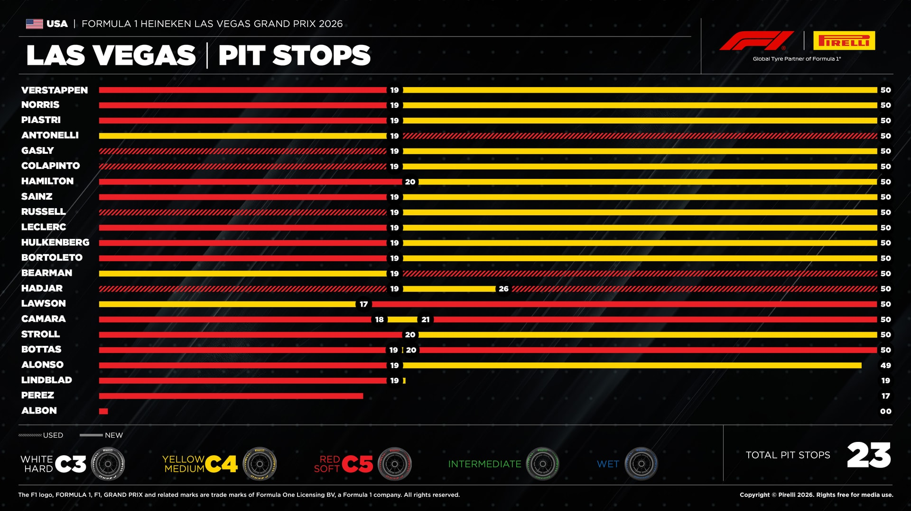

Reliability & Pit Stops
Official classifications and Pirelli's actual race-stint chart.
Race reliability
A retired driver may still receive an official classified position; such drivers remain in the DNF count and are excluded from finishers.
| Driver | Team | Lap | Retired |
|---|---|---|---|
| Fernando Alonso ALO | Aston Martin | 49 | DNF |
| Arvid Lindblad LIN | Racing Bulls | 19 | DNF |
| Sergio Perez PER | Cadillac | 17 | DNF |
Did not start
| Driver | Team | Status |
|---|---|---|
| Alexander Albon ALB | Williams | DNS |
Shortest pit-lane times
Formula1.com pit-stop-summary elapsed times include pit-lane transit and the stop. These are not stationary wheel-change times or net race-time pit losses.
| # | Driver | Pit-lane time | Lap |
|---|---|---|---|
| 1 | Max Verstappen VER | 21.220s | L19 |
| 2 | Fernando Alonso ALO | 21.488s | L19 |
| 3 | Liam Lawson LAW | 21.681s | L17 |
| 4 | Valtteri Bottas BOT | 21.757s | L20 |
| 5 | Gabriel Bortoleto BOR | 21.781s | L19 |
| 6 | Nico Hulkenberg HUL | 21.894s | L19 |
| 7 | Valtteri Bottas BOT | 22.070s | L19 |
| 8 | George Russell RUS | 22.090s | L19 |
| 9 | Carlos Sainz SAI | 22.157s | L19 |
| 10 | Charles Leclerc LEC | 22.159s | L19 |
Fastest lap of the race
Liam Lawson — 1:35.591
Set on lap 50 at an average of 233.532 km/h. Fastest lap carries no championship bonus point under the current regulations; the bonus was removed from 2025.
Actual race strategy: Soft to Medium for the podium
Pirelli's post-race report confirms Verstappen, Norris and Piastri all started on Softs and switched to Mediums during the lap-19 Safety Car period. Antonelli, Lawson and Bearman started on Mediums. The complete chart records 23 pit stops; its bars show stint compounds, used/new status and stop laps, not stationary stop durations or pitlane elapsed times.
Pirelli reports a longest Medium stint of 30 tyre laps and Lawson's Soft stint of 33. Those are reported tyre ages, not an inferred remaining-set inventory. Track temperature was around 12°C. These are actual race findings, not the earlier one-stop forecast. Pirelli, 22 November · Official Pirelli race infographics.
